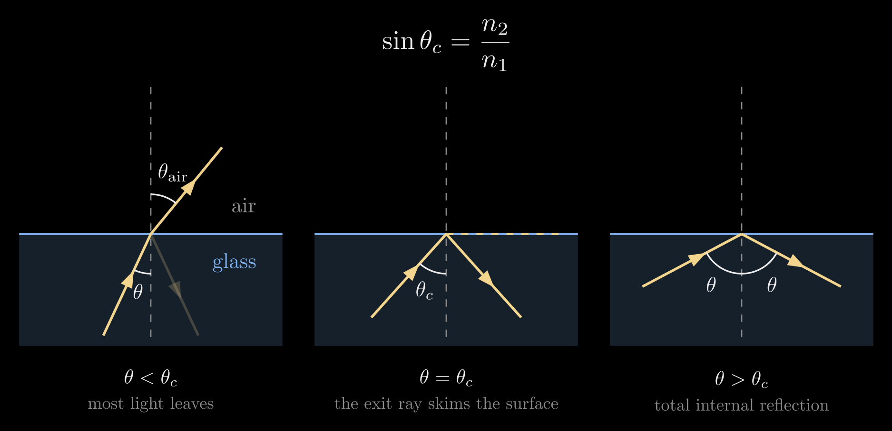
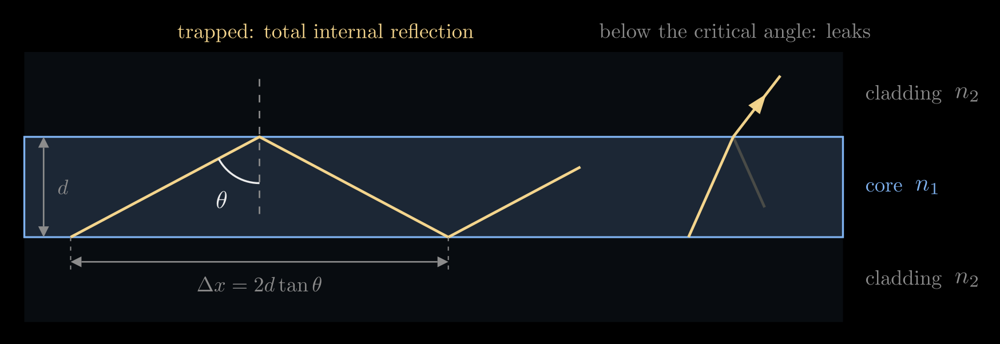
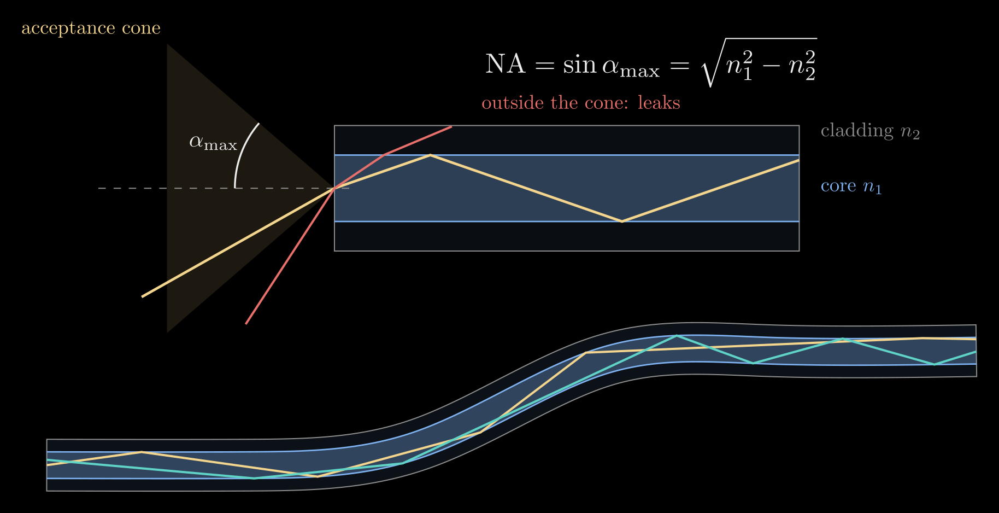
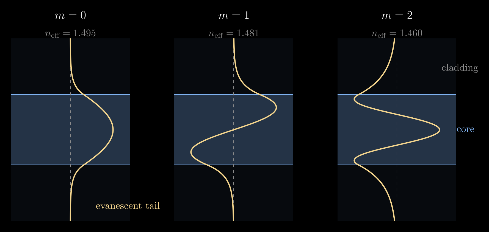
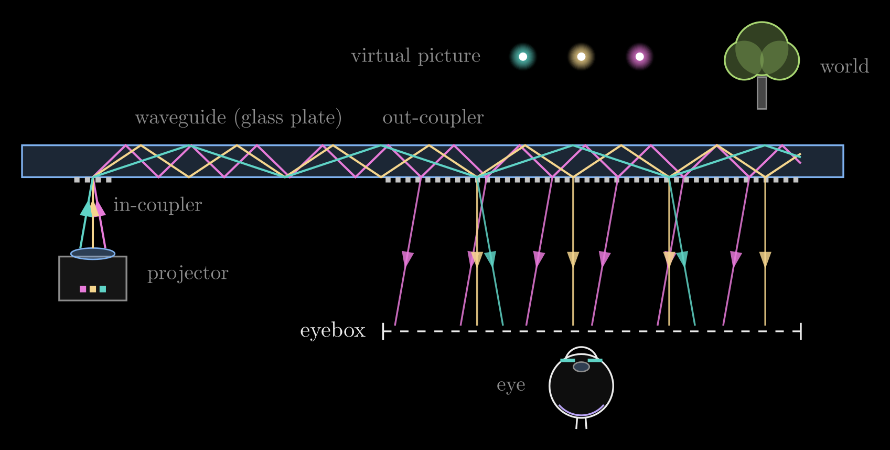
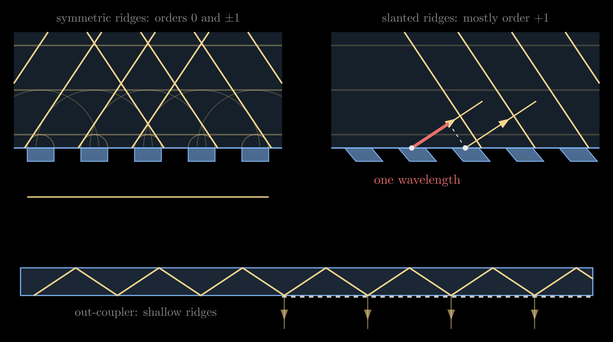
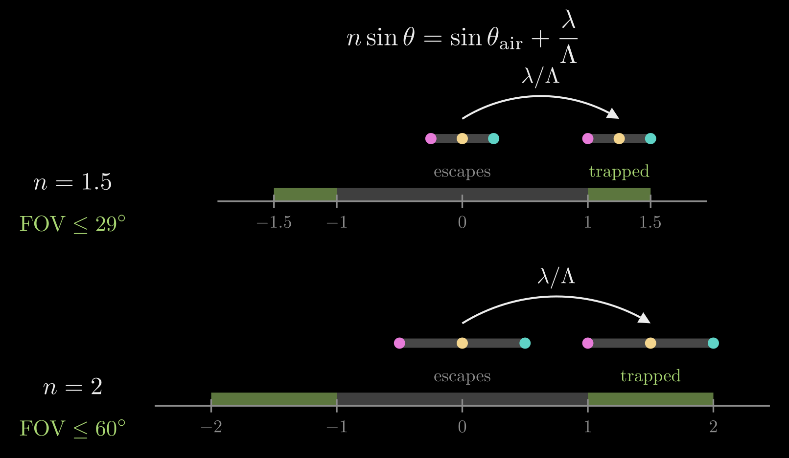
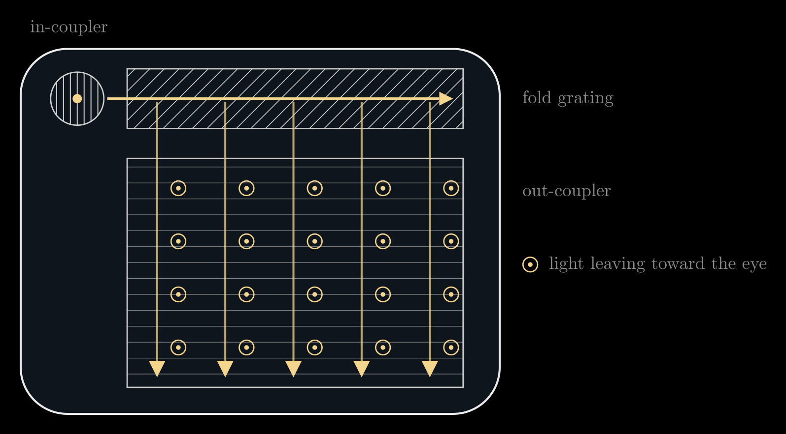

Optical Waveguides
An optical waveguide is a structure that confines light and carries it along a path. It is built from a transparent core whose refractive index is higher than that of the material around it, the cladding. Light that travels along the core at a glancing angle to its walls cannot get out: it reflects completely at every wall and follows the core, even around gentle bends, with almost no loss. Optical fibers carry internet traffic across oceans this way, waveguides etched into silicon route light between components on photonic chips, and in augmented-reality (AR) glasses a thin glass plate carries the picture from a small projector at the temple to the front of the eye while the wearer still sees the world through the glass. This note builds the idea up from Snell's law, looks at it as a wave (guided modes), and then follows the light through an AR waveguide display.
Video: Optical Waveguides: How AR Glasses Work, a five-minute visual explainer of this note.
Bending at a surface, and the critical angle
The refractive index \(n\) of a material says how many times slower light travels in it than in vacuum: about 1 in air, 1.5 in ordinary glass, 1.44 to 1.47 in the silica of optical fibers, 1.8 to 2.0 in the high-index glass of AR waveguides, and 3.48 in silicon at the telecom wavelength of 1550 nm.
When light meets a flat surface between two materials, part of it reflects and the rest crosses, changing direction. Measure angles from the normal, the line perpendicular to the surface. Light arriving at the angle \(\theta_1\) in a material of index \(n_1\) continues into the material of index \(n_2\) at the angle \(\theta_2\) given by Snell's law:
\[n_1 \sin\theta_1 = n_2 \sin\theta_2\]
The product \(n\sin\theta\) is the same on both sides; this note calls it the light's slant along the surface. In wave terms it is the wavevector's component along the surface, \(k_\parallel\), divided by the vacuum wavenumber \(k_0 = 2\pi/\lambda\), where \(\lambda\) is the vacuum wavelength. The wave crests on the two sides must stay matched along the surface, so the crest spacing along it, \(\lambda/(n\sin\theta)\), is shared, and that is all Snell's law says.
Going from glass into air (\(n_1 > n_2\)), the light bends away from the normal. Since \(\sin\theta_2\) cannot exceed 1, the light can leave only while \(n_1\sin\theta_1 \le n_2\). The angle at which the outgoing ray just skims the surface (\(\theta_2 = 90^\circ\)) is the critical angle \(\theta_c\):
\[\sin\theta_c = \frac{n_2}{n_1}\]
For glass in air (\(n_1 = 1.5\), \(n_2 = 1\)), \(\theta_c \approx 41.8^\circ\); for glass with \(n_1 = 2\) it is \(30^\circ\). Light that meets the surface at \(\theta_1 > \theta_c\) has no outgoing ray at all: all of it is reflected. This is total internal reflection (TIR). A metal mirror absorbs a few percent of the light at every reflection, while TIR returns all of it (only absorption and scattering in the material, and flaws at the surface, take a share), so light can bounce thousands of times.

Figure 1. Light inside glass meeting the glass–air surface. Below the critical angle most of the light leaves, bent away from the normal, and a little reflects. At the critical angle the outgoing ray skims along the surface. Past it, all the light reflects: total internal reflection.
Below the critical angle the reflected share is small (about 4% for glass met head-on) and it grows toward 100% as \(\theta_1\) approaches \(\theta_c\), so the change at the critical angle is smooth.
Trapping light: the slab waveguide
The simplest waveguide is a slab: a core layer of index \(n_1\) and thickness \(d\) between two claddings of lower index \(n_2\). For an AR waveguide the cladding is simply the air around a glass plate. A ray inside the core at an angle \(\theta > \theta_c\) from the normal of the faces reflects totally at the top face, comes back at the same angle, reflects totally at the bottom face, and so on: it zigzags along the slab. Each round trip, from the bottom face to the top face and back, advances it by
\[\Delta x = 2d\tan\theta\]
along the slab, which sets how often trapped light meets a face. Rays closer to the normal than \(\theta_c\) lose part of their light at every bounce and fade out within a few bounces.

Figure 2. A slab waveguide. A ray past the critical angle zigzags along the core, advancing \(\Delta x = 2d\tan\theta\) per round trip; a ray below the critical angle leaks into the cladding.
An optical fiber is the same idea in a cylinder: a glass core of radius \(a\) inside a glass cladding of slightly lower index, coated in plastic. Total internal reflection does not need a straight wall, so light follows the fiber around gentle bends; a bend so tight that the rays meet the wall closer to the normal than \(\theta_c\) lets light escape.
How much light gets in: the numerical aperture
Light enters a fiber through its flat end face. A ray arriving from air at the angle \(\alpha\) to the fiber's axis is bent toward the axis, to the angle \(\alpha'\) with \(\sin\alpha = n_1\sin\alpha'\) (Snell's law at the end face), and then meets the core's wall at \(\theta = 90^\circ - \alpha'\) from the wall's normal. It is trapped if \(\theta > \theta_c\), that is, if \(\cos\alpha' > n_2/n_1\). Combining the two conditions gives \(\sin\alpha < \sqrt{n_1^2 - n_2^2}\): the fiber accepts a cone of light whose half-angle \(\alpha_{\max}\) defines its numerical aperture,
\[\mathrm{NA} = \sin\alpha_{\max} = \sqrt{n_1^2 - n_2^2}\]
The NA says how wide a cone of light the fiber collects, and so how easy it is to couple light into it. Telecom fibers use a core only slightly denser than the cladding, for example \(n_1 = 1.450\) and \(n_2 = 1.444\), which gives \(\mathrm{NA} \approx 0.13\) and \(\alpha_{\max} \approx 7.6^\circ\); inside, the trapped rays travel within about \(5^\circ\) of the axis. The small step is deliberate: it keeps the fiber single-mode at a core size that is practical to make and to align, as the next section explains.

Figure 3. Top: rays from inside the acceptance cone are trapped in the core, while a ray from outside it meets the wall below the critical angle and leaks through the cladding (indices exaggerated to \(n_1 = 1.5\), \(n_2 = 1.35\)). Bottom: trapped light follows a bent fiber.
The wave picture: guided modes
Rays describe thick guides well, but light is a wave, and in a guide only a few wavelengths thick only certain zigzag angles survive. A plane wave zigzagging in the slab overlaps its own reflections. After one round trip, across the slab and back, it must be in step with itself; otherwise the many reflections cancel. Counting the phase gained crossing the slab twice and the phase shift at each of the two reflections gives the condition
\[2 k_0 n_1 d \cos\theta - 2\varphi_r(\theta) = 2\pi m, \qquad m = 0, 1, 2, \dots\]
Here \(k_0 n_1 d\cos\theta\) is the phase gained crossing the slab once (only the part of the wavevector across the slab counts), \(\varphi_r(\theta)\) is the phase lag of one total internal reflection, which depends on the angle and on the polarization (for light polarized parallel to the faces, \(\varphi_r = 2\arctan\big(\sqrt{n_1^2\sin^2\theta - n_2^2}\,/\,(n_1\cos\theta)\big)\)), and the whole number \(m\) is the mode number.
Each solution \(\theta_m\) is a guided mode: a fixed field pattern across the slab that travels along it without changing shape. Its phase advances along the guide at the rate set by its propagation constant
\[\beta = k_0 n_1 \sin\theta_m = k_0 n_{\text{eff}}\]
so the mode travels like a plane wave in a material of effective index \(n_{\text{eff}} = n_1\sin\theta_m\), which is the mode's slant. Because \(\theta_m > \theta_c\), the effective index always lies between the two indices, \(n_2 < n_{\text{eff}} < n_1\). The fundamental mode (\(m = 0\)) has the most glancing zigzag and the highest \(n_{\text{eff}}\); each higher mode zigzags more steeply, has one more zero across the guide, and has a lower \(n_{\text{eff}}\). This is the same effective index that sets the delay of a metasurface pillar in Flat Optics: DOEs and Metasurfaces: each pillar is a short waveguide.

Figure 4. The first three guided modes of a slab (\(n_1 = 1.5\), \(n_2 = 1.45\)): the field across the guide, with evanescent tails in the cladding. Higher modes have more zeros, lower effective indices and longer tails.
The field does not stop at the core's edge. In the cladding the field \(E\) decays as an evanescent wave, \(E \propto e^{-\gamma s}\), where \(s\) is the distance into the cladding and \(\gamma = k_0\sqrt{n_{\text{eff}}^2 - n_2^2}\) sets how fast; the tail typically reaches a fraction of a wavelength to a few wavelengths. The cladding must be thick enough to hold it, and bringing a second guide or a sample within reach of it lets light leak across, which is how directional couplers and evanescent sensors work.
A thicker guide, or a larger index step, fits more modes. A symmetric slab guides about \(M \approx 2d\,\mathrm{NA}/\lambda\) modes of each polarization (rounded up), and only one when \(d < \lambda/(2\,\mathrm{NA})\), with \(\mathrm{NA} = \sqrt{n_1^2 - n_2^2}\) as for the fiber. For a fiber the same role is played by the V-number, \(V = 2\pi a\,\mathrm{NA}/\lambda\): a step-index fiber is single-mode for \(V < 2.405\) and carries about \(V^2/2\) modes when \(V\) is large. A telecom single-mode fiber has a core about 8 µm across and \(\mathrm{NA} \approx 0.13\), so at \(\lambda = 1.55\) µm, \(V \approx 2.1\). A single mode matters for long links because different modes travel at different speeds and smear a short pulse (modal dispersion). An AR waveguide plate, by contrast, is about 0.5 mm thick, and as glass of index 1.5 in air (\(\mathrm{NA} \approx 1.1\)) it holds about two thousand modes at visible wavelengths. It behaves just as the ray picture says: every direction travels as its own plane wave, which is what is needed to carry an image.
Waveguides in AR glasses
AR glasses have to add a digital picture to the view without blocking the world, using an element in front of the eye that is only a few millimeters thick and light enough to wear all day. A waveguide combiner does this in four steps.
- A small projector at the temple, a microdisplay behind a collimating lens, turns each pixel into a parallel beam with its own direction: the picture is written in angles, as if it were far away. A picture spanning a field of view (FOV) becomes a fan of beams whose angles in air, \(\theta_{\text{air}}\), run from \(-\mathrm{FOV}/2\) to \(+\mathrm{FOV}/2\).
- The in-coupler, a grating (or a prism or a mirror) on the glass plate, redirects these beams into the plate at angles past the critical angle, so they are trapped.
- Total internal reflection carries the light along the plate, a few centimeters, to the region in front of the eye.
- The out-coupler, a second grating (or a row of partly reflecting mirrors) in front of the eye, sends a little of the light out at every bounce, each beam back in its original direction. The eye focuses each direction onto its own point of the retina and sees the picture floating in the world.
Between the couplers the plate is clear glass, and the gratings divert only a small part of the light from the world, so the world stays visible.

Figure 5. A waveguide display seen from above the wearer's head. Three pixels leave the projector in three directions; the in-coupler tilts each past the critical angle; the out-coupler releases a copy of each at every bounce, back in its original direction, across the eyebox.
Gratings as couplers
A grating is a surface pattern that repeats with a period \(\Lambda\). In most AR waveguides it is a surface-relief grating: a row of fine ridges a few hundred nanometers apart, molded into a thin resin layer on the glass or etched into the glass itself. Light crossing it is diffracted. Each ridge scatters a small wavelet, and the wavelets from all the ridges add up only in directions where they arrive in step, where the light from one ridge lags the light from the next by a whole number of wavelengths. Straight ahead they add up with no lag (the zeroth order); the two first orders are the tilted directions where the lag is exactly one wavelength.
For a beam that arrives at the angle \(\theta_{\text{air}}\) and leaves into the glass at the angle \(\theta\), the optical path from one ridge to the next differs by \(\Lambda\sin\theta_{\text{air}}\) on the way in and by \(n\Lambda\sin\theta\) on the way out. Setting the difference to one wavelength \(\lambda\) gives the direction of the first order:
\[n \sin\theta = \sin\theta_{\text{air}} + \frac{\lambda}{\Lambda}\]
where \(n\) is the plate's index: the grating adds the fixed step \(\lambda/\Lambda\) to the light's slant. With no grating (\(\Lambda \to \infty\)) this is Snell's law again, and for light leaving into air (\(n = 1\)) at normal incidence it is \(\sin\theta = \lambda f\) from Diffraction Grating Formula, with the spatial frequency \(f = 1/\Lambda\). Higher orders add whole multiples of \(\lambda/\Lambda\).
Two things turn this into a trap. First, the period is shorter than the wavelength in air (\(\Lambda < \lambda\)), so the first order would need a slant above 1 to leave on the air side: it cannot exist in air at all and travels only inside the glass, already past the critical angle. Second, the ridges are slanted or blazed like the teeth of a saw, so most of the light goes into the one first order that heads toward the out-coupler. Symmetric ridges would split it between the \(+1\) and \(-1\) orders and let part of it straight through in the zeroth order, which crosses the plate and is lost.

Figure 6. How a grating steers light. Top left: each ridge sends wavelets into the glass (faint arcs); they add up straight ahead (order 0) and in two tilted directions (orders ±1). Top right: slanted ridges send most of the light into order +1, the direction in which each ridge's light lags the next by one wavelength (red). Bottom: the out-coupler's shallow ridges release a little light at every bounce, while the rest is reflected on.
To be useful the guided light must stay trapped and must exist in the glass. Its slant has to exceed 1, so that it is past the critical angle at both glass–air faces (\(\sin\theta > 1/n\)), and it has to stay below \(n\), since \(\sin\theta < 1\):
\[1 < n\sin\theta < n\]
This window is the central design constraint of AR waveguides. The out-coupler has the same period, so it changes the slant by the same step, \(\lambda/\Lambda\). Adding the step again would push the slant past \(n\), which no light in the glass can have, so only the step back is possible: the out-coupler subtracts \(\lambda/\Lambda\) and brings the slant back below 1, where the light can leave. Its ridges are shallow, so at each bounce only a small part of the trapped light is diffracted out, and the rest is totally reflected on to the next bounce. The height of the ridges sets how much a grating diffracts: taller ridges give the wave a larger phase step from ridge to groove and send more of the light into the tilted order, and for shallow ridges the diffracted share grows roughly with the square of their height. Tall out-coupler ridges would release nearly all the light at the first bounce, one copy and a tiny eyebox; shallow ones release a few percent at each bounce, which spreads the light over many copies. Every beam leaves at an angle \(\theta_{\text{out}}\) with \(\sin\theta_{\text{out}} = \sin\theta_{\text{air}}\), in exactly the direction it arrived from, for every pixel and every wavelength, and the picture comes out undistorted. In two dimensions the same rule says that the gratings' vectors (each pointing across its grooves, with length \(2\pi/\Lambda\)) must add up to zero along the light's path.
The field of view is set by the index
The whole picture has to fit inside the window. The pixels' slants in air run from \(-\sin(\mathrm{FOV}/2)\) to \(+\sin(\mathrm{FOV}/2)\), a range \(2\sin(\mathrm{FOV}/2)\) wide; the in-coupler shifts them all by \(\lambda/\Lambda\) without changing that width; and the window from 1 to \(n\) is \(n - 1\) wide. So, along one direction of the picture,
\[2\sin\frac{\mathrm{FOV}}{2} \le n - 1\]
For \(n = 1.5\) the field of view is at most \(29^\circ\), for \(n = 1.8\) about \(47^\circ\), and for \(n = 2.0\) it reaches \(60^\circ\). This is why AR waveguides use high-index glass (\(n \approx 1.7\) to \(2.0\)) and even silicon carbide (\(n \approx 2.6\)). Real designs stay inside this bound with a margin: near the grazing end of the window (\(n\sin\theta \to n\)) the bounces grow far apart, since \(\Delta x = 2d\tan\theta\) grows without limit. In two dimensions the window becomes a ring between radius 1 and \(n\) in the plane of slants along the plate's two directions, and the shifted rectangle of the picture must fit inside the ring; layouts that send different parts of the field of view along different paths can exceed the one-path limit.

Figure 7. The slant ruler. Light in the glass whose slant is between −1 and 1 can leave it; light with a slant between 1 and \(n\) is trapped. The grating shifts the picture's spread of slants (three pixels) into the trapped window, whose width \(n - 1\) limits the field of view: about \(29^\circ\) for \(n = 1.5\) and \(60^\circ\) for \(n = 2\).
Pupil replication and the eyebox
The projector's beam is only a few millimeters wide, but the eye has to see the picture from anywhere inside an eyebox a centimeter or more across, to fit different faces and eye movements. The out-coupler handles this by releasing only part of the light at each bounce, so one input beam becomes a row of copies spaced \(\Delta x = 2d\tan\theta\) apart. This is pupil replication, also called exit pupil expansion, and two rules follow from it.
- Equal brightness: if \(N\) copies are each to carry \(1/N\) of the light, the \(j\)-th exit must release \(1/(N - j + 1)\) of what is left: \(1/N\) first, then \(1/(N - 1)\), and all of the remainder at the last. Out-couplers therefore grow stronger along the path, for example by deepening the grating.
- No gaps: the spacing \(\Delta x\) should not exceed the beam's width, or dark bands appear between the copies. Since \(\Delta x\) grows with \(\theta\), the pixels guided at the most glancing angles are the hardest to fill in.
A single row of copies widens the eyebox in one direction only. A third grating, the fold (or turning) grating, sits between the in-coupler and the out-coupler. As the light crosses it, it turns a part of the light by \(90^\circ\) at every step, spreading the beam along the first direction, and the out-coupler then spreads each turned beam along the second.

Figure 8. Two-dimensional pupil expansion, seen from the front. The in-coupler sends the light sideways into the fold grating, whose grooves at \(45^\circ\) turn part of it downward at every step; the out-coupler releases it toward the eye at every bounce. The three grating vectors add to zero, so the light leaves in the direction it arrived from.
Color
The grating's step \(\lambda/\Lambda\) depends on the wavelength: red light (\(\lambda \approx 630\) nm) is tilted more than blue (\(\lambda \approx 460\) nm). Because the out-coupler undoes the step, each color still leaves in its original direction, but inside the plate the colors travel at different angles, bounce at different spacings and sit in different parts of the window. A single plate cannot carry a wide field of view in all three colors, so diffractive displays often stack two or three plates, each tuned for part of the spectrum. Uneven out-coupling between the colors shows up as color shifts across the picture, and light from the world diffracted by the gratings can show up as faint rainbows.
Kinds of waveguide combiners
- Diffractive: surface-relief gratings, nanostructures imprinted or etched into the glass surface, as in Microsoft HoloLens and Magic Leap. They are thin and mass-producible but dispersive, with the color and efficiency issues above.
- Holographic: volume gratings recorded inside a photopolymer layer as a periodic variation of its index. They are efficient for the angles and colors that meet their Bragg condition, but narrow in angle and wavelength.
- Reflective: a mirror in-coupler and a row of embedded, partly reflecting mirrors as the out-coupler, as made by Lumus. Mirrors reflect all colors alike, so there is no dispersion, but the many coated layers are harder to manufacture.
- Metasurface couplers: gratings made of subwavelength pillars (see Flat Optics: DOEs and Metasurfaces), which can shape the efficiency and polarization of each order.
Waveguides elsewhere
- Optical fiber: silica fiber loses only about 0.2 dB per kilometer at 1550 nm (half the light survives 15 km), so undersea cables need an amplifier only every 50 to 100 km. Single-mode fibers carry long-distance links; multimode fibers, with cores 50 or 62.5 µm across, serve short ones.
- Photonic chips: a silicon strip about 500 nm wide and 220 nm tall, clad in silica (\(n \approx 1.44\)), guides light at 1550 nm. The large index step holds the mode tightly, so bends a few micrometers in radius are possible and thousands of components fit on one chip; silicon nitride guides reach visible light with lower loss.
- Metasurfaces: each pillar is a short waveguide whose effective index sets its phase delay.
Summary
- Snell's law keeps the slant \(n\sin\theta\) across a surface; past the critical angle, \(\sin\theta_c = n_2/n_1\), light is totally reflected.
- A core of higher index traps light that travels at glancing angles: it zigzags along a slab or a fiber, and \(\mathrm{NA} = \sqrt{n_1^2 - n_2^2}\) sets the cone of light it accepts.
- As waves, only discrete zigzags survive: guided modes with \(n_2 < n_{\text{eff}} < n_1\); thin guides carry a single mode.
- An AR waveguide couples the picture in with a grating, \(n\sin\theta = \sin\theta_{\text{air}} + \lambda/\Lambda\), guides it by total internal reflection and releases a little at every bounce to fill the eyebox; the trapped window \(1 < n\sin\theta < n\) limits the field of view to \(2\sin(\mathrm{FOV}/2) \le n - 1\).